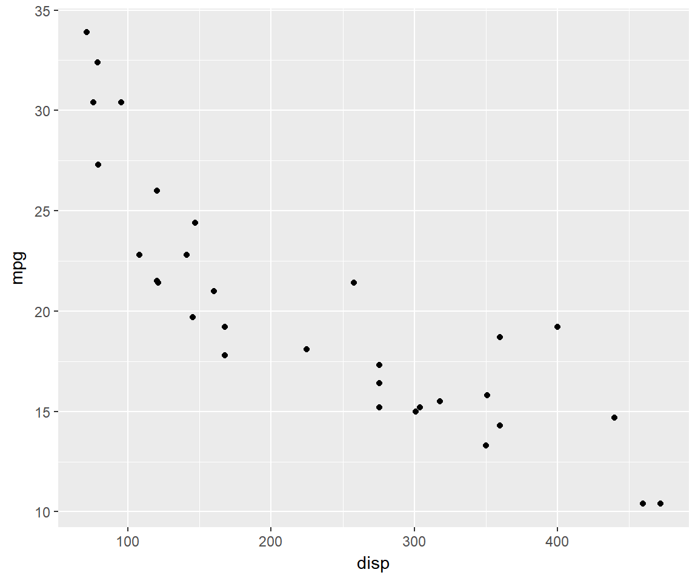

Introduction
This is the first post in the series Elegant Data Visualization with ggplot2. In this post, we will:
- understand the philosophy of Grammar of Graphics
- explore different aspects of ggplot2
- learn to build some of the basic plots regularly used for exploring data
ggplot2 is an awesome alternative to base R for data visualization. It is based on The Grammar of Graphics. In this post, we will understand the philosophy behind ggplot2 and learn to build some of the most frequently used plots for visualizing data.
Grammar of Graphics
Grammar of Graphics is a formal system for building plots. The core idea is that any plot can be uniquely described as a combination of
- a dataset
- a geom
- a set of mappings
- a statistic
- a position adjustment
- a coordinate system
- a faceting scheme
Data
Let us build a scatter plot from scratch using the mtcars data. We will build the plot incrementally and understand the above layers. The first step in any data visualization exercise is to identify the data set. In ggplot2, we can specify the data set using ggplot().
ggplot(data = mtcars) 
If you observe, ggplot() does not generate any plot, it just creates a coordinate system.
Geom
After specifying the data set, we have to decide how the data will be visualized. We will do this using geoms. It basically details the geometric shapes that must be used to display the data. In our case, we want the data to displayed as points.
There are several geoms and we will explore them one by one. For the time time being, let us use geom_point(). This tells ggplot2 it must use points to represent the data. The next step is to specify the variables that will be represented by the X and Y axis. To do this we will use mapping and aes.
aes is the short for aesthetics. Using mapping, we can map variables to aesthetics. We specify the aesthetic type and the corresponding variable within aes.In our example, we want the X axis to be represented by disp and Y axis by mpg. ggplot2 will search for these variables in the data we have provided in ggplot which is mtcars. If ggplot2 can’t find the variables, it will return an error.
So far we have provided:
- data set
- geometric shape to represent data
- variables to represent
XandYaxis
The above layers are the bare minimum required to create a plot in ggplot2.
ggplot(data = mtcars) +
geom_point(mapping = aes(x = disp, y = mpg))
Aesthetics
What are aesthetics?
xyshapesizecolorfillalphalinetype
Aestheics are the visual properties of the objects in the plot. We can display the geometric object in different ways by changing the values of its aesthetic properties.
Color
ggplot(data = mtcars) +
geom_point(mapping = aes(x = disp, y = mpg, color = cyl))Shape
ggplot(data = mtcars) +
geom_point(mapping = aes(x = disp, y = mpg, shape = factor(gear)))Size
ggplot(data = mtcars) +
geom_point(mapping = aes(x = disp, y = mpg, size = hp))Stat
Some graphs plot the raw data set, but others like bar plot, box plot and histograms compute new values and plot them. In this section, we will look at how the data is transformed.
stat_countstat_boxplotstat_binstat_summary
Position
position_dodgeposition_identityposition_jitterposition_fill
Coordinate System
Default is the cartesian coordinate system.
coord_flipcoord_polar
Facet
facet_gridfacet_wrap
Summary
In this post, we learnt
- about grammar of graphics
- the components of a plot/chart
- to build a plot step by step
Up Next..
In the next post, we will learn to quickly build a set of plots/charts that are routinely used in exploring data.